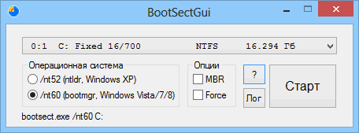

BootSectGui
Назначение
Прописывает загрузчик на диск используя bootsect.exe.

Взаимосвязанные
BootSectGui
Изначально идея NIKZZZZ, позже от меня доработка вывода в строку состояния, форматирование отступов в раскрывающемся списке дисков, больше подсказок.